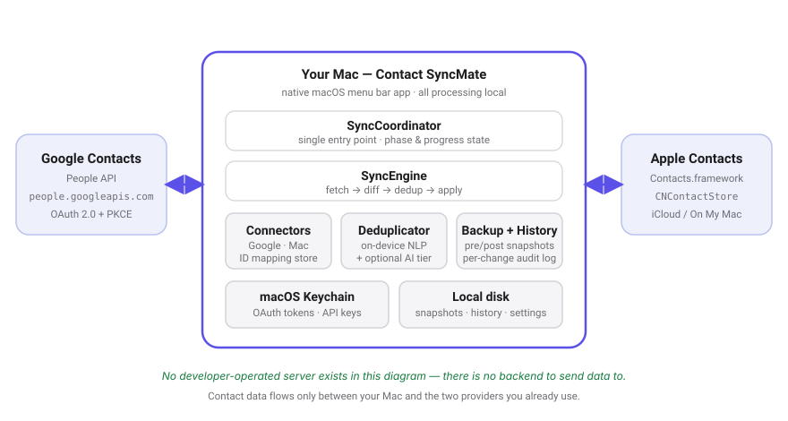
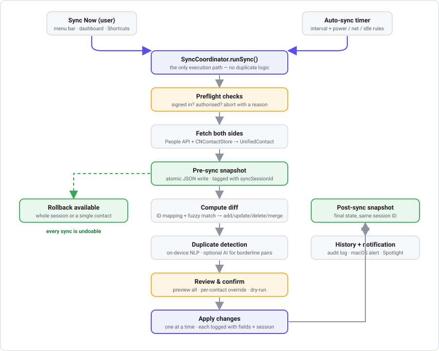

Contact SyncMate
Two-way contact synchronisation between Google Contacts and Apple Contacts, for macOS.
What Contact SyncMate does
Contact SyncMate is a native macOS menu bar application that keeps your Google Contacts and your Apple Contacts (iCloud or “On My Mac”) matching each other — in both directions, on a schedule you control, with every change reviewable before it is written.
Who it is for
People who maintain contacts in two ecosystems at once: a Google account used for Gmail, Android, or work, and Apple Contacts used across Mac, iPhone, and iPad. Also anyone migrating between the two who wants the move to be reversible rather than a one-shot import.
The problem it solves
When the same address book lives in two places, the two copies drift. A phone number corrected on your iPhone never reaches Gmail. A colleague added in Google Contacts never appears on your Mac. Re-importing to catch up creates duplicates — “Bob Smith” beside “Robert Smith”, the same person twice with half the details on each card.
Contact SyncMate reconciles the two lists instead of overwriting one with the other: it tracks which Google contact corresponds to which Mac contact, detects what actually changed on each side since the last run, merges field-level differences, and recognises records that are the same person under different spellings.
How it works

A sync is a deterministic pipeline. Whether you press Sync Now or the background timer fires, execution goes through a single coordinator, so progress, history, and the menu bar indicator can never disagree with each other.

| Stage | What happens | Your control |
|---|---|---|
| 1. Trigger | Manual (menu bar, dashboard, or a Shortcuts action) or the auto-sync timer. | Optional confirmation prompt before any sync starts. |
| 2. Preflight | Verifies Google is signed in and Contacts access is granted; aborts with a plain-language reason if not. | Failures are surfaced, never silent. |
| 3. Fetch | Reads both address books and normalises them into one internal contact model. | Restrict to selected groups or labels. |
| 4. Pre-sync snapshot | Writes a complete before-state to disk, atomically, tagged with a session ID. | On by default; can be disabled. |
| 5. Diff | Uses stored ID mappings plus fuzzy matching to classify each contact as add, update, delete, or merge. | Choose direction: two-way, Google → Mac, or Mac → Google. |
| 6. Duplicate detection | On-device matching for nicknames, initials, transposed names, phonetic surnames, phone formats, and email aliases. | Optional cloud AI tier for borderline pairs — off by default. |
| 7. Review | Every pending change is listed with the exact fields affected. | Override any single change; or dry-run and write nothing. |
| 8. Apply | Changes are written one at a time; each is logged with contact, direction, fields, and session ID. | Deletions require confirmation unless you turn that off. |
| 9. Post-sync snapshot + audit | Final state is snapshotted, the result written to history, and a macOS notification posted. | Roll back the whole session, or one contact to any earlier version. |
Google permissions we request — and why
Contact SyncMate requests exactly two OAuth scopes. It requests no others, and it does not read your mail, calendar, files, or profile beyond the address shown below.
| Scope | Why it is required |
|---|---|
https://www.googleapis.com/auth/contactssensitive · read + write |
Read — list your Google contacts so the app can determine
what changed since the previous sync. Write — create and update Google contacts so edits you made on your Mac reach Google, and delete them only when you have enabled deletion propagation and confirmed the specific deletion. Why nothing narrower works: contacts.readonly
permits Google → Mac only. Two-way sync is the app’s core function and
requires write access; the People API exposes no narrower write scope.
|
https://www.googleapis.com/auth/userinfo.emailnon-sensitive |
Display which Google account is currently connected, in Settings → Accounts, so you can tell multiple accounts apart and confirm you signed in with the right one. The address is not transmitted anywhere. |
Which contact fields are actually read or written?
Only fields you enable in Settings → Sync Fields participate. Deselected fields are left untouched on both sides.
| Field | Default | Note |
|---|---|---|
| Names (given / middle / family / prefix / suffix) | Always | Core identity; used for matching. |
| Phone numbers | Always | Also used as a matching signal. |
| Email addresses | Always | Also used as a matching signal. |
| Photos | On | Toggleable. |
| Birthday | On | Toggleable. |
| Postal addresses | On | Optional country-code normalisation. |
| Websites / URLs | On | Toggleable. |
| Job title & organisation | On | Toggleable. |
| Notes | Unavailable | Apple restricts the Contacts note field to apps holding a special entitlement, which this build does not have. The control is disabled rather than silently failing. |
Features in detail
Sync directions & scheduling
- Two-way sync — changes flow in both directions; field-level merge when both sides changed.
- Google → Mac — Google is the source of truth; Mac is updated to match.
- Mac → Google — the reverse.
- Manual sync — always preview and approve before anything is written.
- Auto-sync — 5 min, 15 min, 30 min, hourly, 4-hourly, or daily. Optional conditions: only on AC power, only on Wi-Fi, only when the Mac is idle.
- Live status — the menu bar icon shows a percentage while syncing; the popover shows an item counter and a countdown to the next scheduled run.
Duplicate detection & matching
Matching runs on-device first. Signals include:
- Nickname equivalence — Bob ↔ Robert, Liz ↔ Elizabeth
- Initial abbreviation — J. Smith ↔ John Smith
- Transposed name order — Wei Li ↔ Li Wei
- Phonetic surnames — Schmidt ↔ Schmitt
- Phone suffix matching across local and international formats
- Email plus-alias detection —
john+work@≈john@ - Compound-name handling — Liwei Zhang ↔ Li Wei Zhang
Scores below the confidence threshold are never merged silently. High-confidence merges require a small group size and no conflicting critical fields. An optional cloud AI tier (Claude Haiku, Sonnet, or Opus) can be enabled with your own API key to adjudicate borderline pairs; it is off by default, and when active only the two records being compared are sent — never your list.
Your decisions are remembered, so a pair you marked “keep separate” is not raised again.
Backups, history & rollback
- Automatic snapshot before and after every sync, written atomically and linked by session ID.
- Manual snapshot on demand.
- Per-contact version history with a side-by-side comparison view.
- Roll back an entire sync session, or restore one contact to an earlier version.
- Configurable retention: how many snapshots to keep, and how long to keep history events.
- Spreadsheet export (CSV / XLSX) of either address book for archiving.
- Change log records, for each applied change, the contact, direction, fields affected, and session ID.
Conflict resolution & safety
- Default policy: always ask, prefer Google, or prefer Mac.
- Per-contact override in the preview sheet, whatever the default.
- Deletion propagation is off by default; when on, each deletion is confirmed.
- Dry-run mode computes the full diff and writes nothing.
- Force-update mode rewrites every contact — useful after changing normalisation rules.
- Optional name normalisation (Title Case, UPPER, lower) with particle-aware handling of “van der Berg”, “McDonald”, “O’Brien”. Off by default, and CJK names are never altered.
macOS integration
- Menu bar app with optional Dock icon.
- Native notifications on completion, failure, and when duplicates need review.
- Shortcuts / Siri — “Sync Contacts Now” and “Get Last Sync Status” actions for automation.
- Spotlight — sync summaries are indexed so you can search past runs. Contact data is never indexed.
- Launch at login, appearance override (system / light / dark), selectable accent colour, and a menu bar popover you can trim to just the sections you use.
- Full keyboard navigation, VoiceOver labels, Reduce Motion and Differentiate Without Color support.
Privacy & data handling
| Question | Answer |
|---|---|
| Where is contact data processed? | Entirely on your Mac. |
| Does the developer receive your contacts? | No. There is no server to receive them. |
| Analytics or telemetry? | None. |
| Advertising or data sale? | Never. |
| Where are OAuth tokens stored? | macOS Keychain — never in plain text. |
| Where are backups stored? | On your disk, in a folder you choose. |
| Can access be revoked? | Yes — in-app Sign Out, or your Google Account permissions page. |
| Is the code auditable? | Yes — source is public. |
Contact SyncMate’s use and transfer of information received from Google APIs adheres to the Google API Services User Data Policy, including the Limited Use requirements. Full detail in the Privacy Policy.
Requirements
Support
Questions, bug reports, and feature requests: GitHub Issues. The full source code is available at github.com/mingmanhk/Contact-SyncMate.